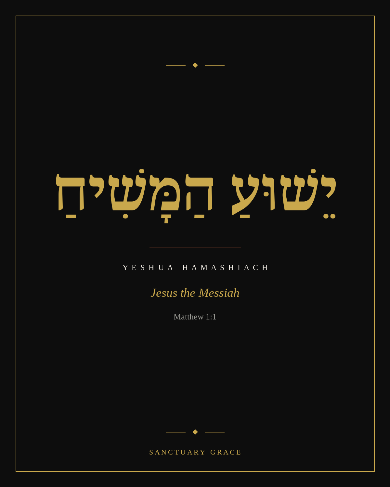
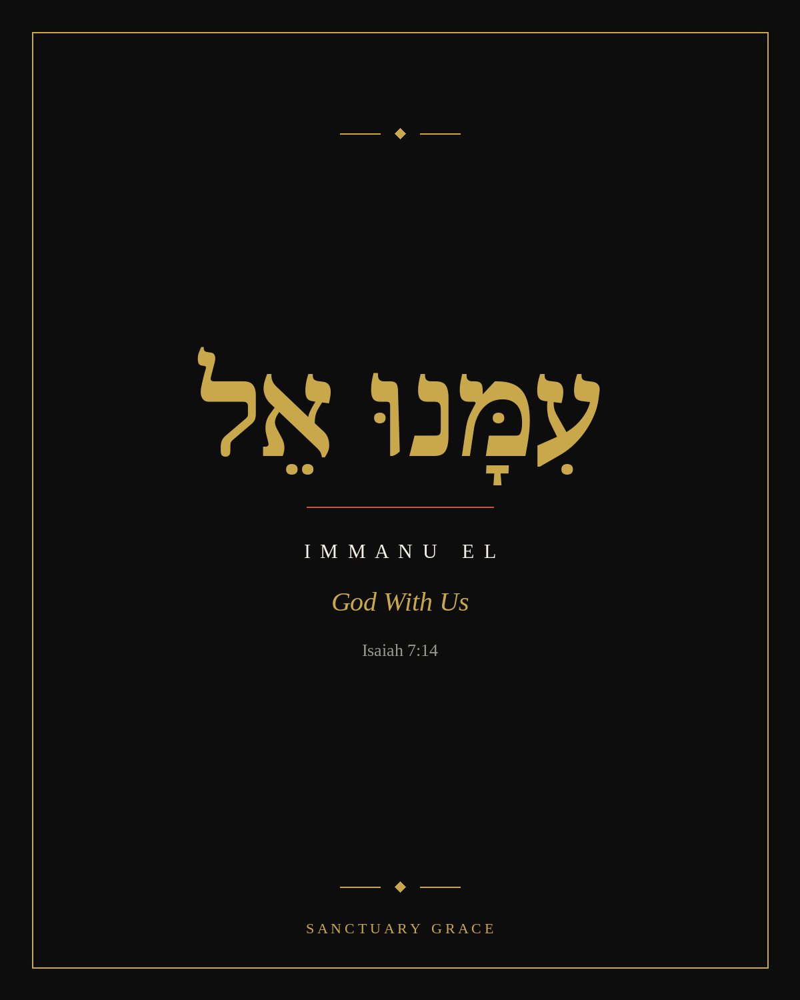
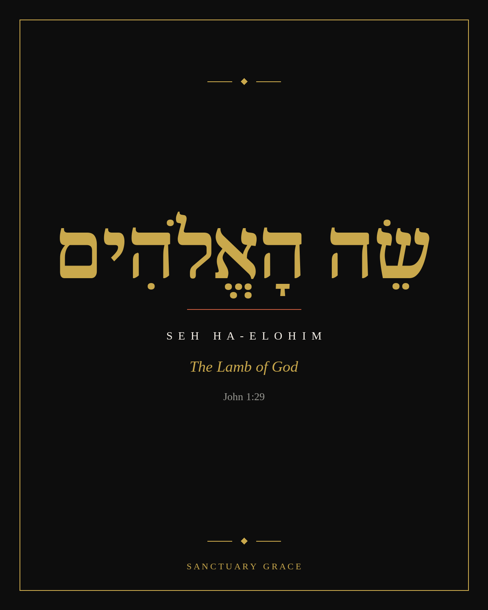
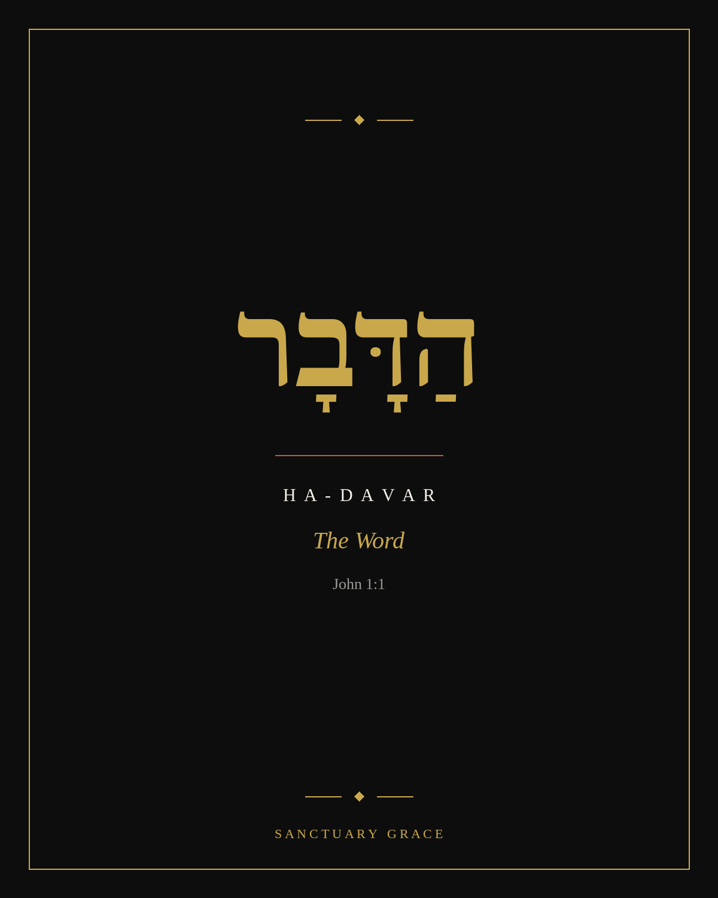
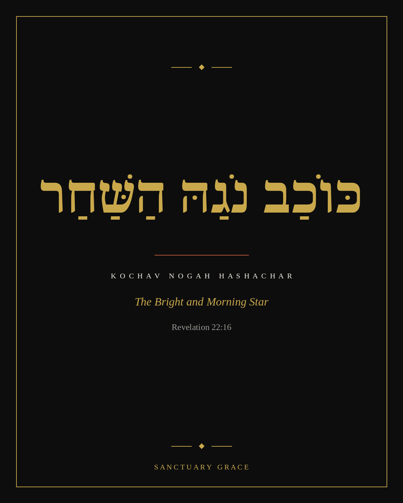
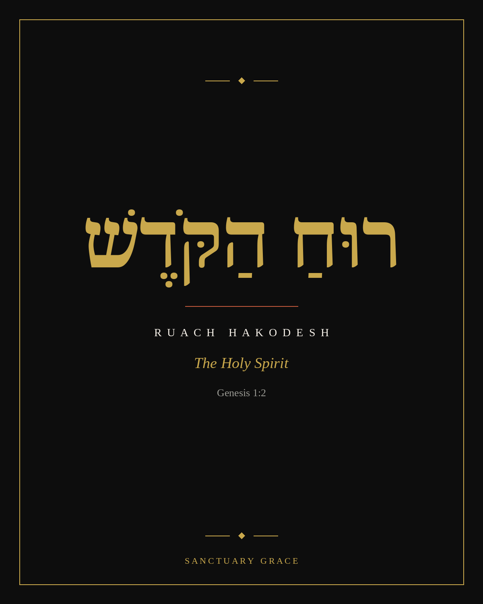
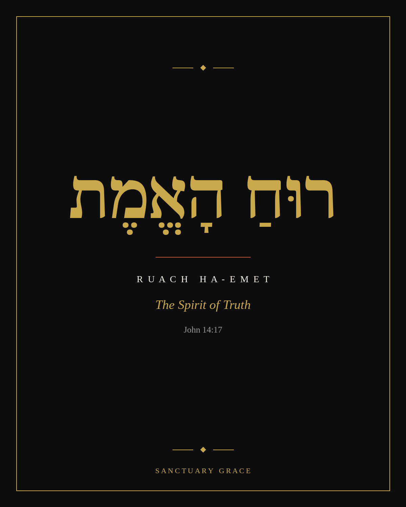
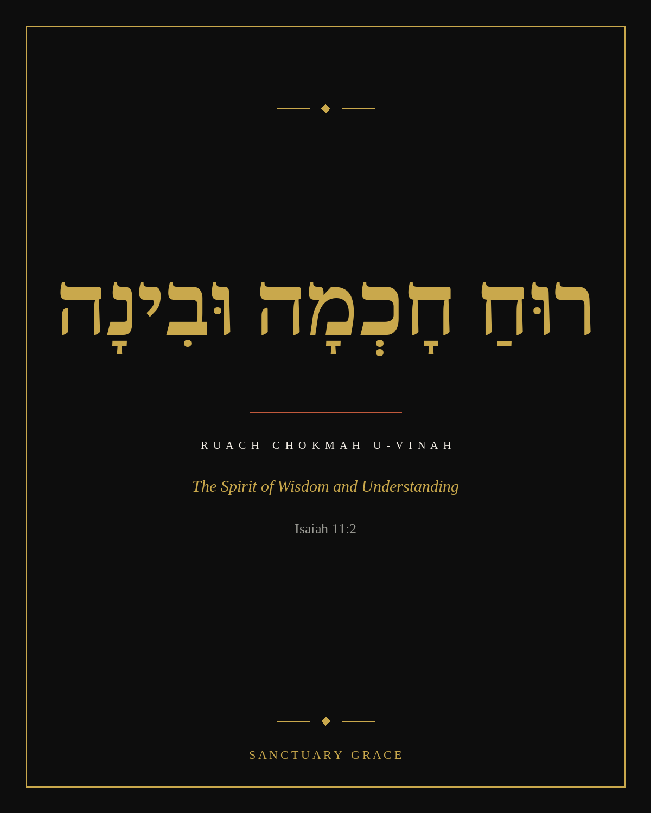
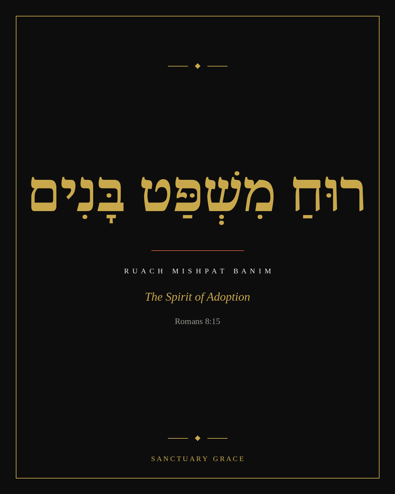

The Names of God traced the Father through the Hebrew text. These nine complete the picture: five names for the Son, four for the Spirit, each one carried in the original language and paired with a short prayer to pray it back to Him.
A larger assortment is planned. This first set was chosen because each name here carries its own Hebrew word, the same standard already set by The Names of God.
Free to read, no email required. Each name turned into one short, practical word, with a prayer to pray it back to Him.

His earthly name, "the LORD saves," joined to His divine title, "the Anointed One." Whatever you came here needing saved from, this is the name that already did it.
"Lord Yeshua, thank You for saving us from our sins. As our Anointed King, we submit our plans and ambitions to Your authority today. Amen."

God did not stay at a distance. He put on flesh and stood beside you. Isolation is a feeling, not a fact, once this name is true of your life.
"Immanuel, thank You that I never have to navigate life's valleys alone. Remind me of Your constant presence right here beside me. Amen."

John the Baptist's own words. The debt you couldn't pay was paid in full, once, by the only offering that was ever enough.
"Seh Ha-Elohim, thank You for paying a debt I could never afford to clear. I remember that Your blood has entirely wiped my slate clean. Amen."

Before creation, before language even existed for us, He was already the full and perfect expression of the Father. Not a message about God. God, speaking.
"HaDavar, You are the living Word of God. Speak Your truth into my heart today, and let my life be aligned with Your eternal wisdom. Amen."

The morning star appears when the sky is at its darkest, not after the dawn arrives. If tonight is dark, that is exactly when this name shows up.
"Jesus, You are my Bright and Morning Star. When the world looks bleak, let Your light pierce the gloom. Amen."
The Comforter's own names, each one still carrying its Hebrew word.

First seen hovering over the chaos at creation. Where your spiritual life feels cold or routine, this is the same wind that once brought order out of nothing.
"Ruach HaKodesh, breathe Your life into my heart today. Blow through like a refreshing wind. Renew my inner energy. Amen."

His job is to expose what's false and anchor you back in what's real, especially when every voice around you is confident and wrong.
"Spirit of Truth, give me sharp discernment today. Expose any lies I am believing, and anchor my heart in Your truth. Amen."

Prophesied to rest on the Messiah, and given to you besides. The dilemma you're carrying today was never meant to be untangled with your own strength alone.
"Holy Spirit, let Your Spirit of Wisdom and Understanding rest upon me so I can see my challenges from heaven's perspective. Amen."

Not a spirit of fear, but the full legal standing of a child in the Father's own house. Rejection was never your final address.
"Spirit of Adoption, break any lingering feelings of rejection in my heart. Remind me that I am legally chosen, deeply loved, and secure in God's family. Amen."
Read one name a day. Say it out loud. Pray it back to Him. A bigger assortment, including the Seven "I AM" Statements and the Gifts and Fruit of the Spirit, is already planned to follow.